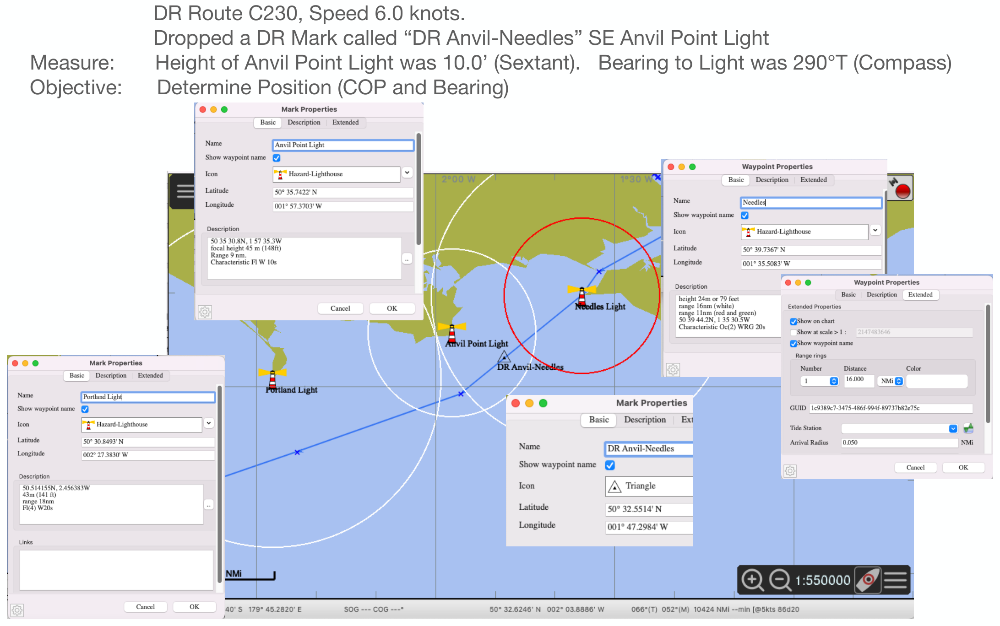

Full-size illustration. Scroll to inspect the details.

DR Route C230, Speed 6.0 knots. Dropped a DR Mark called “DR Anvil-Needles” SE Anvil Point Light Measure: Height of Anvil Point Light was 10.0’ (Sextant). Bearing to Light was 290°T (Compass) Objective: Determine Position (COP and Bearing)